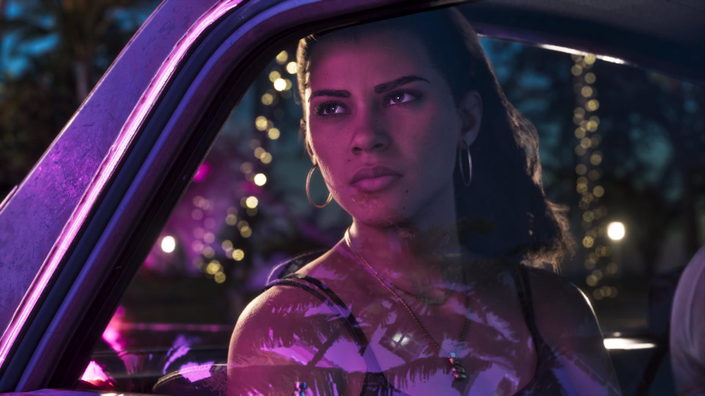

Русский язык в GTA 6: есть ли озвучка
Обновлено: 24.09.2026

Коротко
- Русский язык в GTA 6 есть официально.
- Переведены субтитры и интерфейс.
- Озвучка только английская — как в GTA 5 и Red Dead Redemption 2.
- Всего игра поддерживает 13 языков.
Есть ли русский язык
Да. Русский входит в официальный список поддерживаемых языков GTA 6 на Rockstar Store. Меню, подсказки и субтитры будут на русском.
Будет ли русская озвучка
Нет. Как и в прошлых играх Rockstar, персонажи говорят только по-английски, а другие языки — это перевод текста и субтитров. В GTA 5 и Red Dead Redemption 2 было так же.

Все 13 языков
- Английский
- Французский
- Итальянский
- Немецкий
- Русский
- Японский
- Польский
- Корейский
- Китайский (упрощённый)
- Китайский (традиционный)
- Испанский (Мексика)
- Испанский (Испания)
- Португальский (Бразилия)
Источники: Rockstar Store — раздел «Поддерживаемые языки» GTA VI.